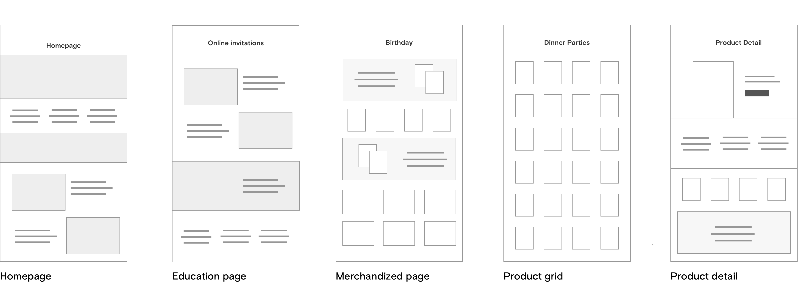

Draft: Product Landing Pages for Paperless Post
I created a templatized system of landing pages to help customers browse and understand our product and streamline our internal processes.
- My role: I identified the need for a systematized approach to building pages, pitched the project to leadership, and got it on the roadmap. I designed all the components, style guide, and helped with implementation on the front-end. If there ever was a baby, this one was mine.
- Additional credits
Colleen Griffiths (brand), Shirley Huong (brand), Ivy Lu (PM), Karl Gabrielyan (SEO, PM)
The problem
At Paperless Post, we frequently had a need to create new landing pages. These pages fell into one of two categories: product marketing or product merchandizing. Strategically, the internal teams wanted more of them, and we needed to make them more efficiently.
Why more pages? The user need.
Merchandized pages are one solution to helping users sort through a broad product offering. In particular with our business, where they only check out with one design, we didn't need users to wade through a large result set. For example, it's not optimal to take users to a grid of "general holiday invitations" because it's not shoppable (no one needs both New Year's Eve and Valentine's Day invitaitons). You want to guide users into a grid of highly-relevant products.
Education pages are dedicated to explaining how a product or service works. Software websites are often entirely made up of these types of pages (because you have to sign up to get started (i.e., Sketch, Spotify, Trunk Club). We allowed users to browse card designs before signing up (think Squarespace), but as a functional software service (not just pretty cards), we needed to do a better job explaining the value.

Proposed heirarchy of page types on paperlesspost.com.
The business need
Creating pages was tedious work, and often took longer than you would expect, like spanning multiple sprints to launch a page. Brand designers would create pixel perfect comps (I once got one made in inDesign), but only at one size. There was a lot of interpretation going on, a lot of how responsive images work, a lot of net-new styles, a lot of churn.
The solution
Link to presentation
Create a system of components with sensible parameters that can be plugged into pages easily, reordered, and updated by business teams.
The system
I looked over old pages and did competitive research to identify what patterns we would need. I looked at how brand was manually creating assets and thought — could we automate that?
Component Highlight:
By using live card data, admins only had to enter card IDs and a background color. We thought these could be automated in the future.
Educational “slats” offered product insight while highlighting top-performing categories of invitations and save the dates.
The curveball
Conclusion
Our new landing pages have out performed the original mixed grids. (For instance, the wedding page increased the average wedding customer value by 2%). We have since created versions of these pages for other top level landing pages including a successful holiday page. The development time for new pages is down to 2 days all-in, rather than 2+ weeks. Business teams are using GitHub to update the LPp= json.